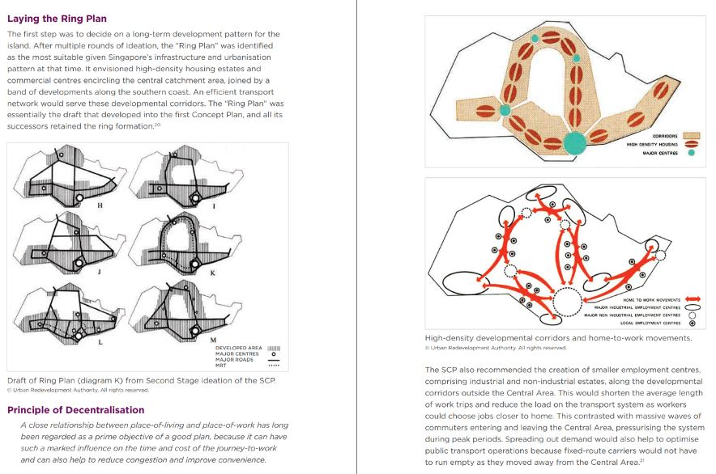

Overall Summary
Positives
• Better connectivity between the east and city centres within Singapore
• Achieve LTA and URA plan of having city centres to be 5-minute walk from MRT Station
• Promoting residence living in private residential areas to use public transportation
• Working professional living in the east region may have access to more transport options and reaching to work quicker
• Ensuring equitable access to public transport services for people staying in private residential
• Reducing carbon emissions and road congestion by encouraging more to take public transport
Negatives
• Low utilisation of MRT Services in low density population areas
• High cost of design and construction of various MRT Stations
• Tractability of projects are not possible when contracts are being legitimised
• Considerable cost borne by middle income taxpayers living in HDB without being able reap the full benefits of having the TEL Stage 4 Line as compared to higher income citizens living within those private residential areas
• Construction of MRT near private residential buildings would only further drive up the price of land properties within private residential area in Marine Parade and Siglap MRT, benefiting the private residence more.
• Bus service within east region may experience less ridership and utilisation, requiring SBS Transit to review its operations or have increase in bus frequency timings.
• Even if MRT Stations are built along the TEL Stage 4 catchment areas, a large proportion of existing land is being used up by low-rise private residential buildings that cover a large area of the east region.
• The government will experience difficulties in having new development within the area such as HDB Flats, Recreational Facilities and Amenities. Making the overall development of the TEL Stage 4 less effective in its long-term planning.
• However, we have acknowledged that the government decision to build TEL Stage 4 may be to bring equity of MRT services to all members of public and to improve connectivity within the city centre.
• Our analysis also suggests that the building composition of most TEL Stage 4 MRT Stations in general have lower cost effectiveness and efficiency in comparison to other regions of Singapore such as Kallang, Ang Mo Kio, Toa Payoh and Bedok where there is high concentration of high-rise HDB flats and utilisation of MRT services is very high.
Other reasons: LTA and URA’s RING PLAN

Ring Plan: plan to reduce the average length of work trips
Load on Transporation system within the central region of connecting MRT lines
LTA and URA planning for optimization of MRT Lines might be also a possible reason why the TEL line was built despite having lower efficiency, but its aim was to help spread out demand to help optimize public transport operations